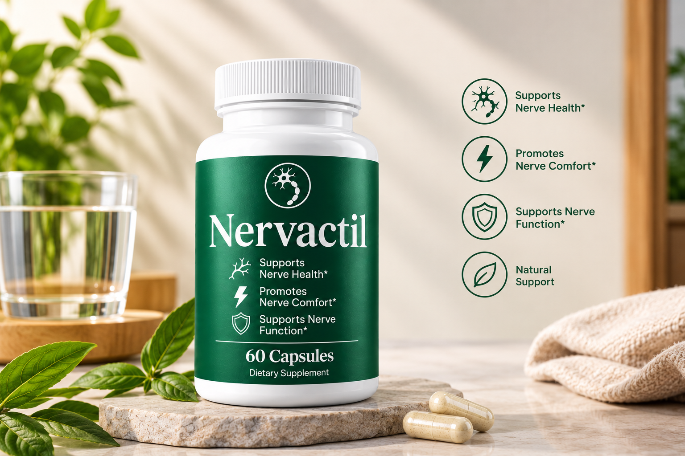

01
Product positioning
The supplied packaging uses wellness-oriented language focused on supporting nerve health, comfort, and function.
Explore Nervactil from an informational perspective, including its stated wellness positioning, ingredient transparency, everyday-use considerations, and what readers should know before evaluating a dietary supplement.

Nervactil is presented in the supplied product imagery as a dietary supplement positioned around nerve-health support, nerve comfort, and nerve function. This website keeps the discussion informational and avoids assuming medical outcomes that are not established by the supplied materials.
The supplied packaging uses wellness-oriented language focused on supporting nerve health, comfort, and function.
Visual botanical elements do not establish a verified formula. The current official label should be used for exact ingredients and quantities.
Readers can evaluate how a supplement fits alongside routine, nutrition, activity, sleep, and other healthy habits.

Product formulations and directions can change. Use the current official product information rather than relying on an older review or image.
Good supplement research is less about promises and more about understanding what the product is, what it contains, how it is intended to be used, and what evidence or product information is actually available.
Start with the current label. Avoid assuming that visual ingredients or general wellness imagery represent the actual formula.
Follow the current serving directions supplied with the product. Do not rely on an unverified dosage from a third-party page.
Individual experiences with dietary supplements can vary. A review should separate product information from personal outcomes.
Dietary supplements are not substitutes for prescribed treatment. If you take medicines, have a health condition, are pregnant or nursing, or have other questions about suitability, consider discussing the product with an appropriately qualified healthcare professional.
No. It is an informational review-style website. Use the official product source for the current product label, serving instructions, and purchasing information.
No ingredient list is assumed from the supplied imagery. The exact current formula should be confirmed using the official product label.
No. Individual experiences with dietary supplements can vary, and this website does not promise a specific outcome.